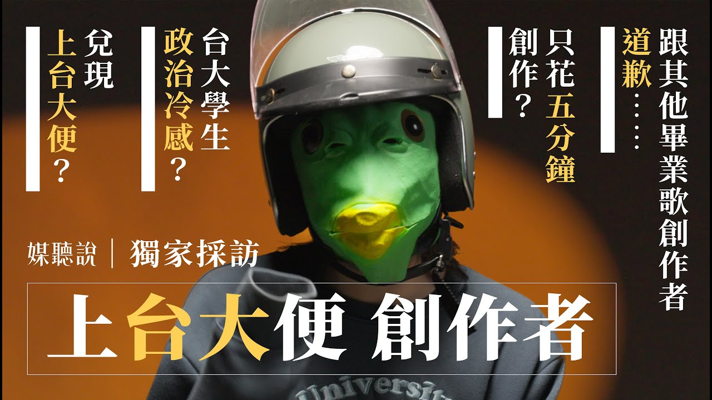
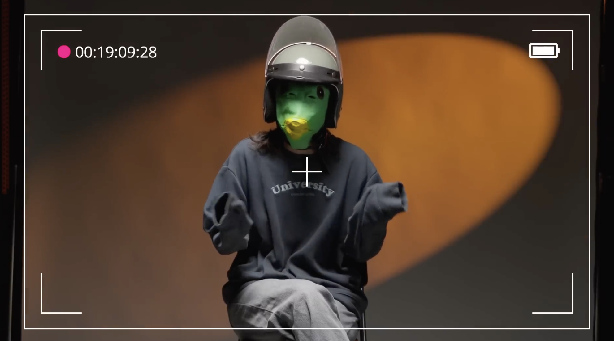
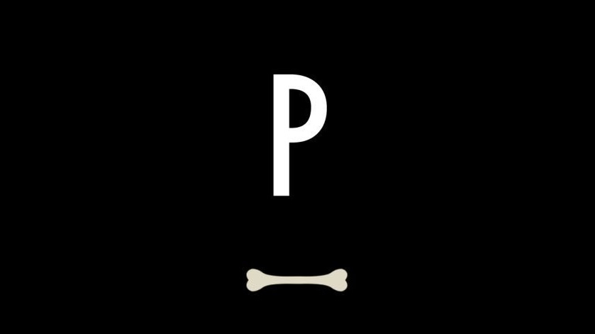
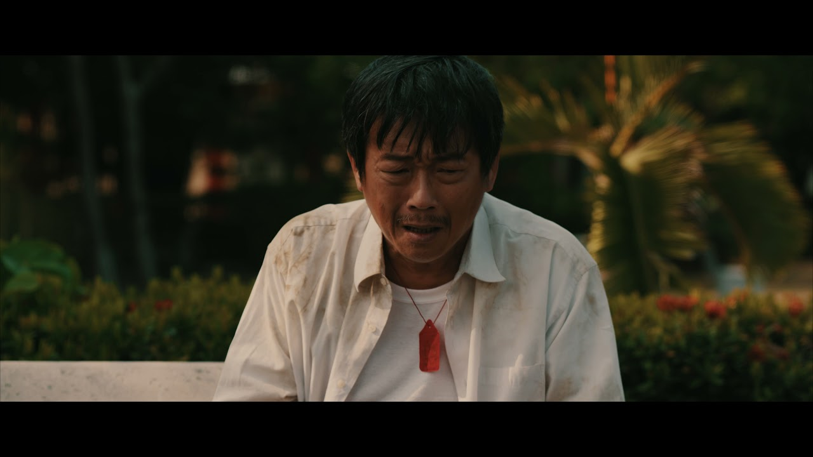
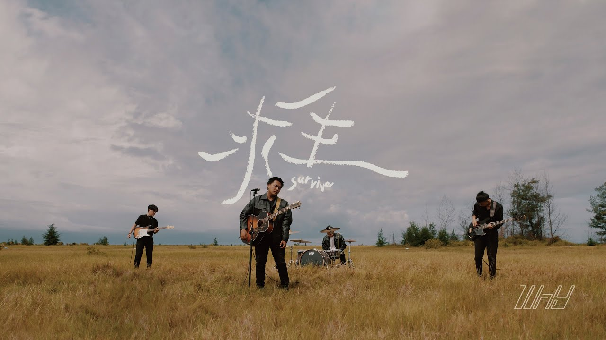

Video
影音
共 5 件。點擊標題觀看影片。

2025 【獨家專訪】台大畢業歌〈上台大便〉創作者幕後秘辛分享 長影音觀看次數：71,995 次 Youtube・攝影／剪輯↗
2025 【獨家專訪】台大畢業歌〈上台大便〉創作者幕後秘辛分享 短影音觀看次數：8,512 次 Youtube・攝影／剪輯↗
2025 狗狗政治學 @woofpolitics Instagram・企劃／剪輯↗
2022 《訊號影展》開幕片《求生》 攝影↗
2022 WHY [ 求生 Survive ] Official Music Video 攝影↗